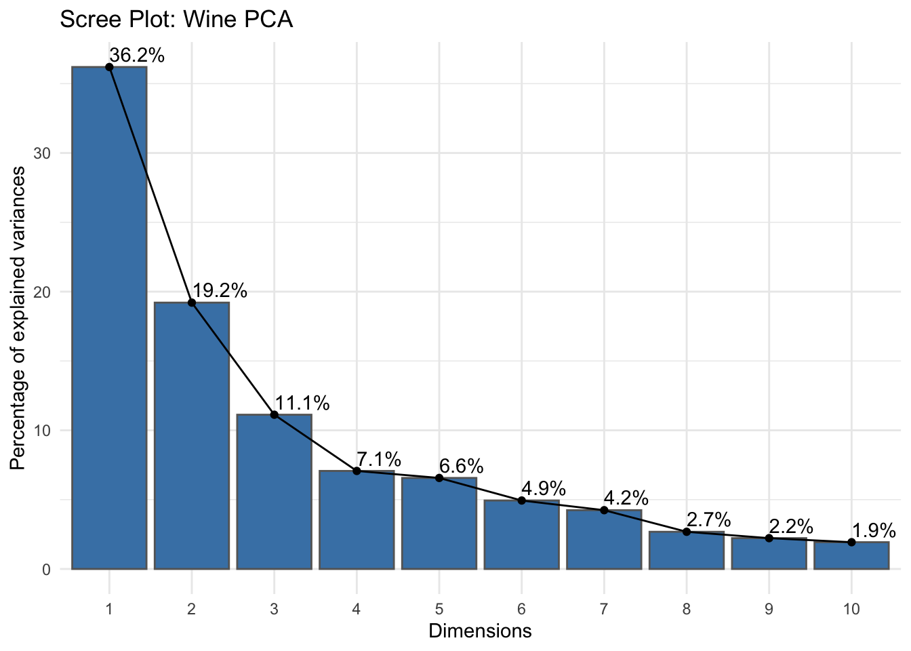
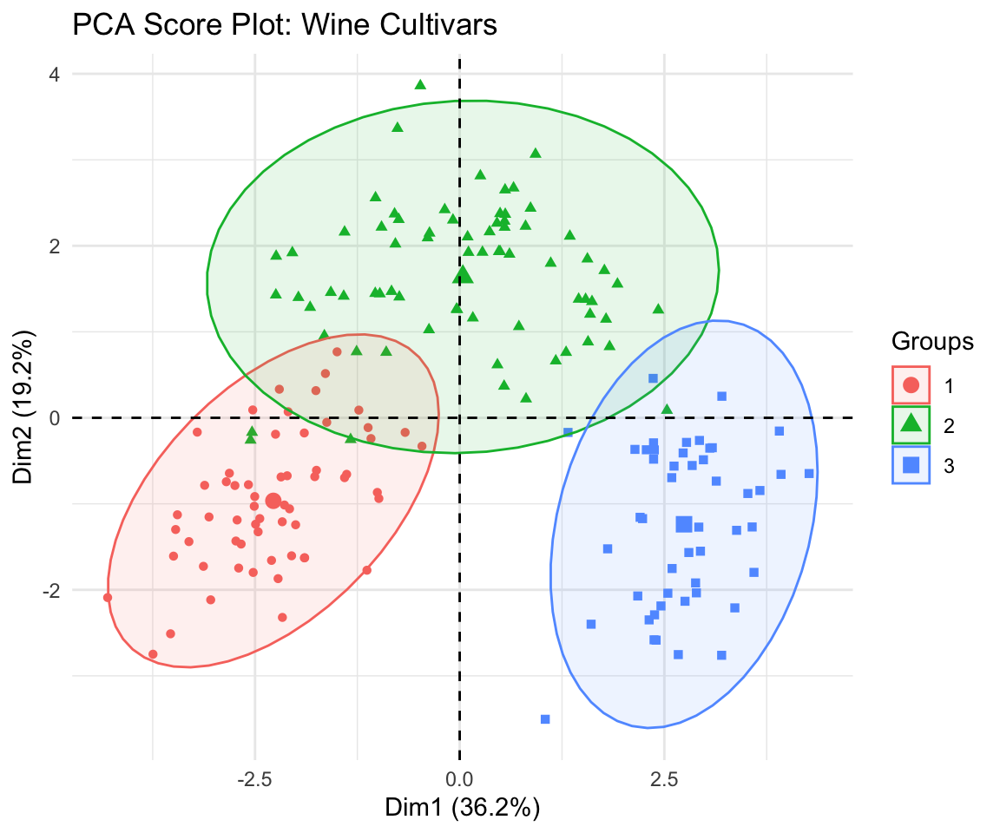
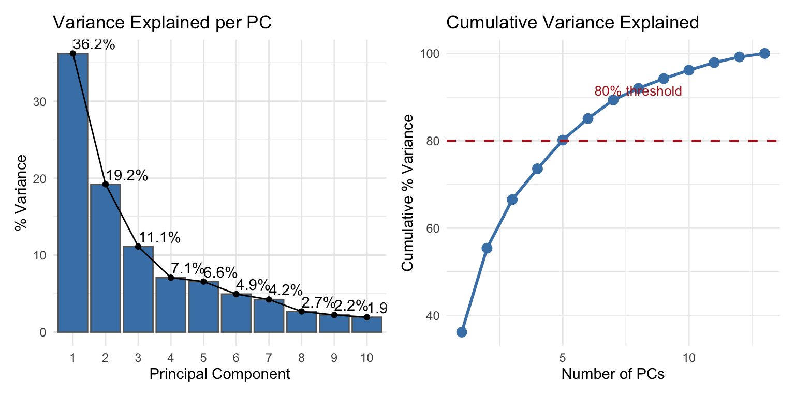
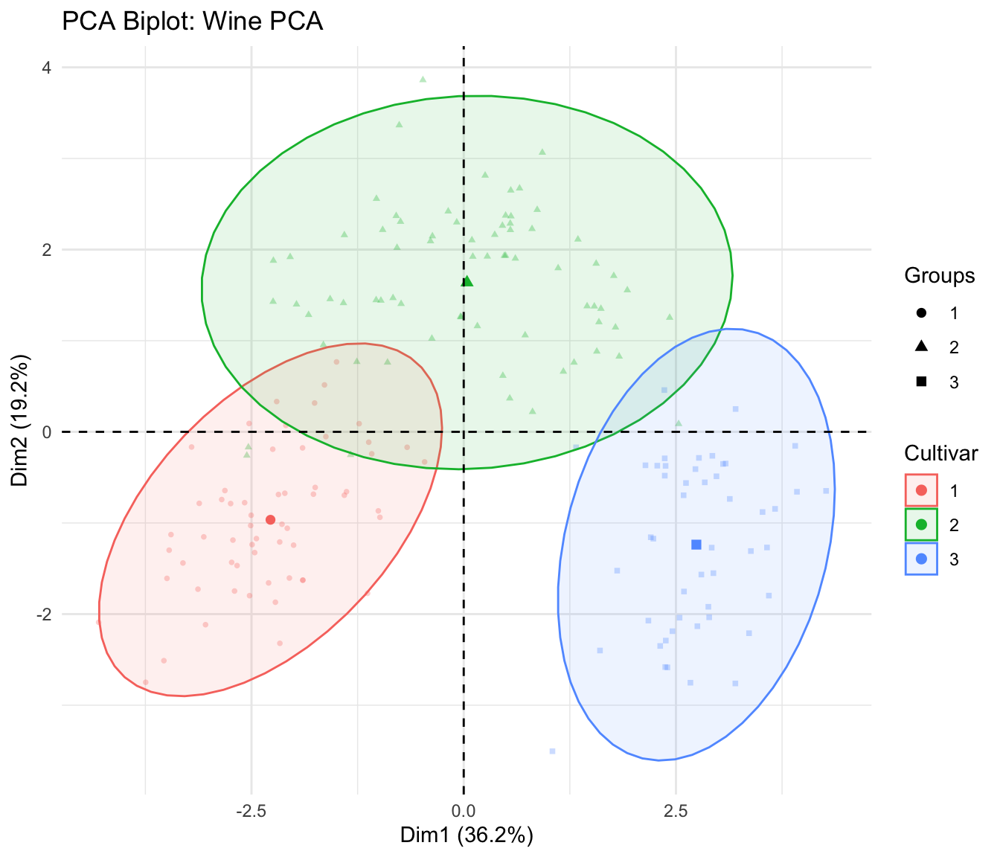
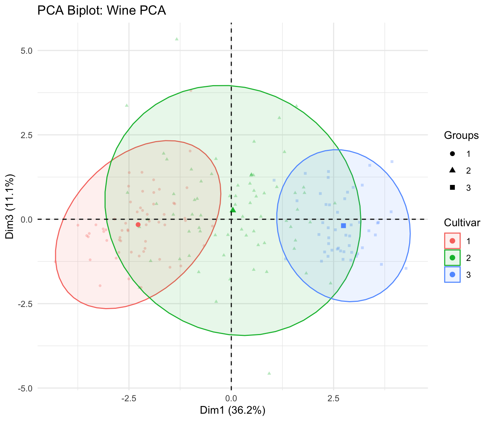
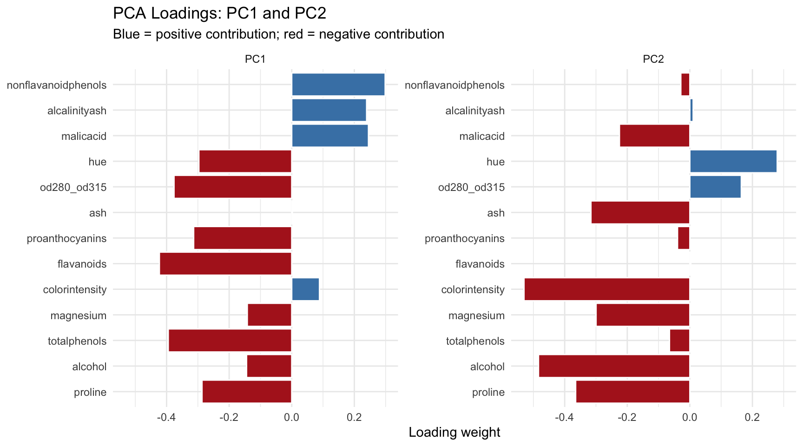
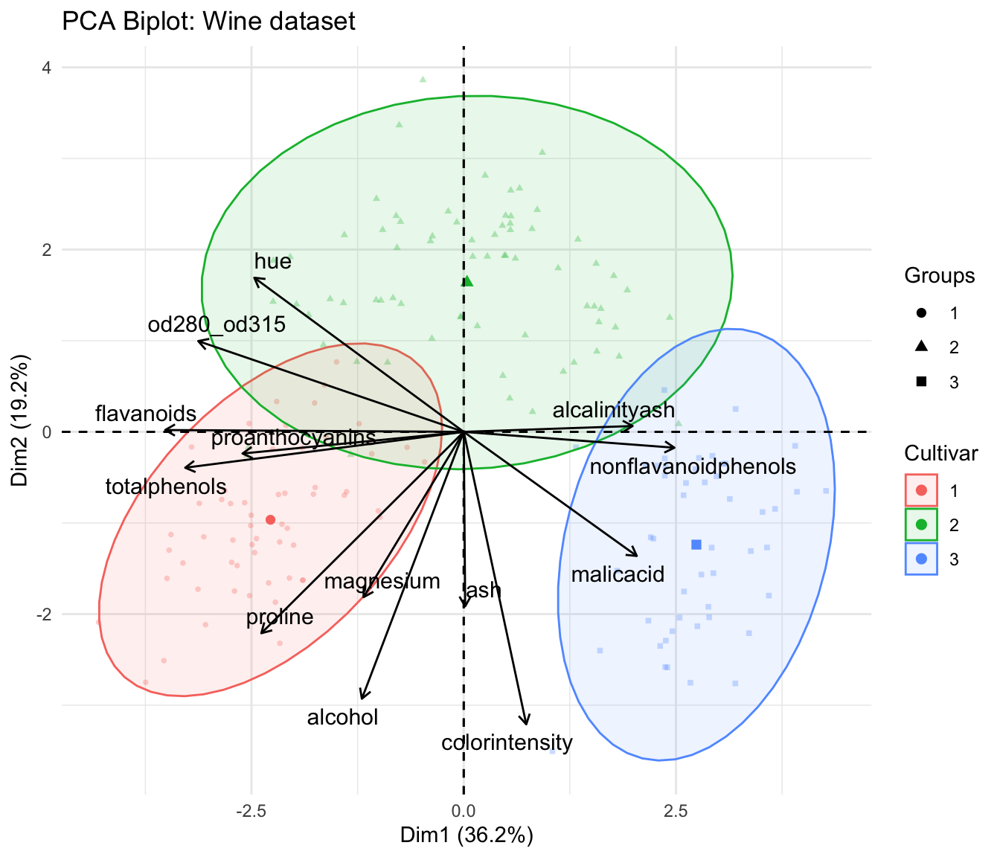

library(tidyverse)
library(this.path)
library(factoextra)
library(patchwork)
setwd(this.dir())
select <- dplyr::select
filter <- dplyr::filterDay 14 (PM) Lab: Principal Component Analysis – Solutions
SC INBRE Biostatistics Summer Intensive 2026
1 Setup
2 Load the Wine Data
url <- paste0("https://archive.ics.uci.edu/ml/",
"machine-learning-databases/wine/wine.data")
wine_raw <- read.csv(url, header = FALSE)
names(wine_raw) <- c("Cultivar", "Alcohol", "MalicAcid", "Ash",
"AlcalinityAsh", "Magnesium", "TotalPhenols", "Flavanoids",
"NonflavanoidPhenols", "Proanthocyanins", "ColorIntensity",
"Hue", "OD280_OD315", "Proline")
wine_raw$Cultivar <- factor(wine_raw$Cultivar)
wine <- wine_raw
head(wine) Cultivar Alcohol MalicAcid Ash AlcalinityAsh Magnesium TotalPhenols
1 1 14.23 1.71 2.43 15.6 127 2.80
2 1 13.20 1.78 2.14 11.2 100 2.65
3 1 13.16 2.36 2.67 18.6 101 2.80
4 1 14.37 1.95 2.50 16.8 113 3.85
5 1 13.24 2.59 2.87 21.0 118 2.80
6 1 14.20 1.76 2.45 15.2 112 3.27
Flavanoids NonflavanoidPhenols Proanthocyanins ColorIntensity Hue
1 3.06 0.28 2.29 5.64 1.04
2 2.76 0.26 1.28 4.38 1.05
3 3.24 0.30 2.81 5.68 1.03
4 3.49 0.24 2.18 7.80 0.86
5 2.69 0.39 1.82 4.32 1.04
6 3.39 0.34 1.97 6.75 1.05
OD280_OD315 Proline
1 3.92 1065
2 3.40 1050
3 3.17 1185
4 3.45 1480
5 2.93 735
6 2.85 1450dim(wine)[1] 178 14For the exercises we will use a clean version with clear variable names:
# Build a clean tibble with the 13 chemical variables + cultivar label
# Using the UCI wine data structure (adjust column names if your load differs)
wine_clean <- wine |>
as_tibble() |>
rename_with(tolower)
# Check the structure
glimpse(wine_clean)Rows: 178
Columns: 14
$ cultivar <fct> 1, 1, 1, 1, 1, 1, 1, 1, 1, 1, 1, 1, 1, 1, 1, 1, 1,…
$ alcohol <dbl> 14.23, 13.20, 13.16, 14.37, 13.24, 14.20, 14.39, 1…
$ malicacid <dbl> 1.71, 1.78, 2.36, 1.95, 2.59, 1.76, 1.87, 2.15, 1.…
$ ash <dbl> 2.43, 2.14, 2.67, 2.50, 2.87, 2.45, 2.45, 2.61, 2.…
$ alcalinityash <dbl> 15.6, 11.2, 18.6, 16.8, 21.0, 15.2, 14.6, 17.6, 14…
$ magnesium <int> 127, 100, 101, 113, 118, 112, 96, 121, 97, 98, 105…
$ totalphenols <dbl> 2.80, 2.65, 2.80, 3.85, 2.80, 3.27, 2.50, 2.60, 2.…
$ flavanoids <dbl> 3.06, 2.76, 3.24, 3.49, 2.69, 3.39, 2.52, 2.51, 2.…
$ nonflavanoidphenols <dbl> 0.28, 0.26, 0.30, 0.24, 0.39, 0.34, 0.30, 0.31, 0.…
$ proanthocyanins <dbl> 2.29, 1.28, 2.81, 2.18, 1.82, 1.97, 1.98, 1.25, 1.…
$ colorintensity <dbl> 5.64, 4.38, 5.68, 7.80, 4.32, 6.75, 5.25, 5.05, 5.…
$ hue <dbl> 1.04, 1.05, 1.03, 0.86, 1.04, 1.05, 1.02, 1.06, 1.…
$ od280_od315 <dbl> 3.92, 3.40, 3.17, 3.45, 2.93, 2.85, 3.58, 3.58, 2.…
$ proline <int> 1065, 1050, 1185, 1480, 735, 1450, 1290, 1295, 104…# Summary statistics for the chemical variables
wine_clean |>
select(where(is.numeric)) |>
summary() alcohol malicacid ash alcalinityash
Min. :11.03 Min. :0.740 Min. :1.360 Min. :10.60
1st Qu.:12.36 1st Qu.:1.603 1st Qu.:2.210 1st Qu.:17.20
Median :13.05 Median :1.865 Median :2.360 Median :19.50
Mean :13.00 Mean :2.336 Mean :2.367 Mean :19.49
3rd Qu.:13.68 3rd Qu.:3.083 3rd Qu.:2.558 3rd Qu.:21.50
Max. :14.83 Max. :5.800 Max. :3.230 Max. :30.00
magnesium totalphenols flavanoids nonflavanoidphenols
Min. : 70.00 Min. :0.980 Min. :0.340 Min. :0.1300
1st Qu.: 88.00 1st Qu.:1.742 1st Qu.:1.205 1st Qu.:0.2700
Median : 98.00 Median :2.355 Median :2.135 Median :0.3400
Mean : 99.74 Mean :2.295 Mean :2.029 Mean :0.3619
3rd Qu.:107.00 3rd Qu.:2.800 3rd Qu.:2.875 3rd Qu.:0.4375
Max. :162.00 Max. :3.880 Max. :5.080 Max. :0.6600
proanthocyanins colorintensity hue od280_od315
Min. :0.410 Min. : 1.280 Min. :0.4800 Min. :1.270
1st Qu.:1.250 1st Qu.: 3.220 1st Qu.:0.7825 1st Qu.:1.938
Median :1.555 Median : 4.690 Median :0.9650 Median :2.780
Mean :1.591 Mean : 5.058 Mean :0.9574 Mean :2.612
3rd Qu.:1.950 3rd Qu.: 6.200 3rd Qu.:1.1200 3rd Qu.:3.170
Max. :3.580 Max. :13.000 Max. :1.7100 Max. :4.000
proline
Min. : 278.0
1st Qu.: 500.5
Median : 673.5
Mean : 746.9
3rd Qu.: 985.0
Max. :1680.0 The variables are on very different scales: Scaling is essential before PCA.
3 Step 1: Scale and Run PCA
# Extract the numeric variables (drop the cultivar label for PCA)
X <- wine_clean |>
select(where(is.numeric)) |>
as.matrix()
# Standardize
X_s <- scale(X)
# Run PCA
pca_wine <- prcomp(X_s, center = FALSE, scale. = FALSE)4 Step 2: Quick Scree Plot
fviz_eig(pca_wine, addlabels = TRUE,
barfill = "steelblue", barcolor = "gray40") +
labs(title = "Scree Plot: Wine PCA") +
theme_minimal()
The first two PCs together explain roughly 55% of the total variance, and the curve shows a clear elbow after PC2 or PC3 – much sharper than the NHANES data from the morning, where variance was spread more evenly.
5 Step 3: Score Plot
fviz_pca_ind(pca_wine,
geom.ind = "point",
habillage = wine_clean$cultivar,
addEllipses = TRUE,
repel = TRUE) +
labs(title = "PCA Score Plot: Wine Cultivars") +
theme_minimal()
Exercise 1 – Variance Explained.
Compute the proportion of variance explained by each PC. The formula is:
var_exp <- pca_wine$sdev^2 / sum(pca_wine$sdev^2)Print a table with the PC number, individual variance explained (%), and cumulative variance explained (%).
# Proportion of variance explained by each PC
var_explained <- pca_wine$sdev^2 / sum(pca_wine$sdev^2)
cum_var <- cumsum(var_explained)
var_df <- tibble(
PC = seq_along(var_explained),
Individual = var_explained * 100,
Cumulative = cum_var * 100
)
var_df |>
mutate(across(c(Individual, Cumulative), ~ round(., 1))) |>
print(n = 10)# A tibble: 13 × 3
PC Individual Cumulative
<int> <dbl> <dbl>
1 1 36.2 36.2
2 2 19.2 55.4
3 3 11.1 66.5
4 4 7.1 73.6
5 5 6.6 80.2
6 6 4.9 85.1
7 7 4.2 89.3
8 8 2.7 92
9 9 2.2 94.2
10 10 1.9 96.2
# ℹ 3 more rowsHow many PCs are needed to explain at least 70% of the total variance? At least 90%?
If we want to explain 70% of the variance we need to use 4 PCs, if we want to explain 90% we need to use 8 PCs.
Apply Kaiser’s rule: keep PCs with eigenvalue greater than 1. The eigenvalues are
pca_wine$sdev^2. How many PCs would Kaiser’s rule suggest keeping?
pca_wine$sdev^2 [1] 4.7058503 2.4969737 1.4460720 0.9189739 0.8532282 0.6416570 0.5510283
[8] 0.3484974 0.2888799 0.2509025 0.2257886 0.1687702 0.1033779Kaiser’s rule suggests using 3 PCs.
- Make a scree plot using
fviz_eig(). Where does the “elbow” appear? Does it agree with the answers from parts b and c? Which criterion would you use, and why?
# Proportion of variance explained by each PC
var_explained <- pca_wine$sdev^2 / sum(pca_wine$sdev^2)
cum_var <- cumsum(var_explained)
var_df <- tibble(
PC = seq_along(var_explained),
Individual = var_explained * 100,
Cumulative = cum_var * 100
)
p1 <- fviz_eig(pca_wine, addlabels = TRUE,
barcolor = "gray40", barfill = "steelblue") +
labs(title = "Variance Explained per PC",
x = "Principal Component", y = "% Variance") +
theme_minimal()
p2 <- var_df |>
ggplot(aes(x = PC, y = Cumulative)) +
geom_line(linewidth = 1, color = "steelblue") +
geom_point(size = 3, color = "steelblue") +
geom_hline(yintercept = 80, linetype = "dashed",
color = "firebrick", linewidth = 0.8) +
annotate("text", x = 8, y = 91.5,
label = "80% threshold", color = "firebrick", size = 3.5) +
labs(title = "Cumulative Variance Explained",
x = "Number of PCs", y = "Cumulative % Variance") +
theme_minimal()
p1 + p2
From the Elbow method, I would say around 2 or 3 PCs seems to be a good choice.
Exercise 2 – Score Plot and Cultivar Separation.
- Produce a score plot (observations in PC space) using
fviz_pca_ind(). Color points by cultivar (habillage = wine_clean$label) and add confidence ellipses (addEllipses = TRUE).
fviz_pca_ind(
pca_wine,
geom.ind = "point",
habillage = wine_clean$cultivar,
addEllipses = TRUE,
repel = TRUE,
col.var = "black",
alpha.ind = 0.3,
pointsize = 1
) +
labs(title = "PCA Biplot: Wine PCA",
color = "Cultivar",
fill = "Cultivar") +
theme_minimal()
Do the three cultivars separate in the first two PCs? Which cultivar is most distinct from the other two?
Yes, the PCAs clearly separate the wines by cultivar. This confirms that the chemical variables genuinely capture cultivar differences – exactly what you want to see. Region 3, appears to be the most different.
PC1 runs left to right on the plot. Look at where each cultivar falls along PC1. Which cultivar has the highest PC1 scores (furthest right)? Which has the lowest (furthest left)?
Wines from region 3 have large positive loadings on PC1, while wines from region 1 have larger negative loadings (on average). Wines from region 2 have PC1 loading that center around 0 with large spread.
Now make a second score plot using PC1 and PC3 instead of PC1 and PC2. Pass
axes = c(1, 3)tofviz_pca_ind(). Does adding PC3 improve or worsen the separation between cultivars?
fviz_pca_ind(
pca_wine,
geom.ind = "point",
habillage = wine_clean$cultivar,
addEllipses = TRUE,
repel = TRUE,
col.var = "black",
alpha.ind = 0.3,
axes = c(1,3),
pointsize = 1
) +
labs(title = "PCA Biplot: Wine PCA",
color = "Cultivar",
fill = "Cultivar") +
theme_minimal()
PC3 has basically no relationship with region. The regional differences were much more clear when visualizing as a function of PC1 and PC2.
Exercise 3 – Loadings.
- Extract the loadings matrix from
pca_wine$rotation. Print the loadings for the first three PCs, rounded to 3 decimal places.
# Numerical loadings for the first three PCs
pca_wine$rotation[, 1:3] |> round(3) PC1 PC2 PC3
alcohol -0.144 -0.484 -0.207
malicacid 0.245 -0.225 0.089
ash 0.002 -0.316 0.626
alcalinityash 0.239 0.011 0.612
magnesium -0.142 -0.300 0.131
totalphenols -0.395 -0.065 0.146
flavanoids -0.423 0.003 0.151
nonflavanoidphenols 0.299 -0.029 0.170
proanthocyanins -0.313 -0.039 0.149
colorintensity 0.089 -0.530 -0.137
hue -0.297 0.279 0.085
od280_od315 -0.376 0.164 0.166
proline -0.287 -0.365 -0.127For PC1: which three variables have the largest absolute loadings? What do these variables have in common chemically? Based on this, what biological property might PC1 be capturing?
Flavanoids, totalphenols, and od280_od315 have the largest loadings. These variables are all tied to phenolic content in wine. In plain terms, this axis is mostly capturing how phenolic-rich the wine is. Phenolics are linked to things like bitterness, astringency, antioxidant capacity, and overall “structure” of the wine.
For PC2: which three variables have the largest absolute loadings? Are these the same variables as PC1 or different? What might PC2 be capturing?
For PC2, colorintensity, alcohol, and proline all have large loadings. These are all often related to grape ripeness, fermentation/extraction, and wine concentration/body. So PC2 is probably capturing something like grape maturation and fermentation outcomes rather than a single chemical class.
Make a loading bar plot for PC1 and PC2 (see the Quick Reference Card for the ggplot2 code). Does the pattern of loadings match your interpretation from parts b and c?
# Plot loadings for PC1 and PC2
loadings_df <- as.data.frame(pca_wine$rotation) |>
rownames_to_column("variable") |>
as_tibble() |>
pivot_longer(cols = -variable, names_to = "PC", values_to = "loading") |>
filter(PC %in% c("PC1", "PC2"))
loadings_df |>
ggplot(aes(x = reorder(variable, loading), y = loading,
fill = loading > 0)) +
geom_col(show.legend = FALSE, color = "white") +
scale_fill_manual(values = c("TRUE" = "steelblue", "FALSE" = "firebrick")) +
facet_wrap(~ PC, scales = "free_y") +
coord_flip() +
labs(x = NULL, y = "Loading weight",
title = "PCA Loadings: PC1 and PC2",
subtitle = "Blue = positive contribution; red = negative contribution") +
theme_minimal()
- Produce a biplot using
fviz_pca_biplot(). Color observations by cultivar. Describe: which variables have arrows pointing in the same direction as the cultivar that has the highest PC1 scores?
fviz_pca_biplot(
pca_wine,
geom.ind = "point",
habillage = wine_clean$cultivar,
addEllipses = TRUE,
repel = TRUE,
col.var = "black",
alpha.ind = 0.3,
pointsize = 1
) +
labs(title = "PCA Biplot: Wine dataset",
color = "Cultivar",
fill = "Cultivar") +
theme_minimal()